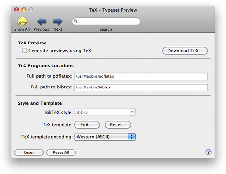

TeX Preview TeX Preview
TeX Preview TeX PreviewThe TeX Preview pane allows you to change the default settings for using LaTeX to generate the contents of the typeset preview window, as described in Previewing Typeset Output.

Generate previews using TeX: (More appropriately, use pdflatex for previewing.) If this is checked, the preview pane will be drawn.
If you do not have a TeX installation, clicking the "Download TeX..." button brings you to a webpage that tells you how to get it.
TeX Program Locations: The TeX and BibTeX program paths can be changed here,
so you are not tied to one distribution of TeX. You must enter the full path to the binaries for
pdflatex and BibTeX, e.g. /usr/local/teTeX/bin/powerpc-apple-darwin-current/pdflatex.
BibTeX style: The BibTeX style file used for the previews (just the name, not the whole path)
can be specified here. This is a list of generic styles that may or may not exist on your system. If
you need to use a style that is not in the menu, make sure it's in a location that TeX searches, (commonly
~/Library/texmf/bibtex/bst), and type the name of the style directly into the text box.
TeX template: Clicking the "Edit..." button lets you change the template file that is added to the beginning of every saved bib file. for generating the preview. This template file is a great place to put your macros, copyright info (if applicable), or shameless plugs for your software :) You can reset the template file to the default by clicking the "Reset..." button. Be careful though, as this action cannot be undone.
TeX template encoding: The encoding popup lets you choose the encoding that is appropriate for the template file and the TeX program you are using. Note that the standard pdflatex and style files does not allow arbitrary Unicode characters. Therefore if you want to use other encodings then ASCII (TeX), you should modify the template and TeX command appropriately.